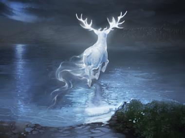
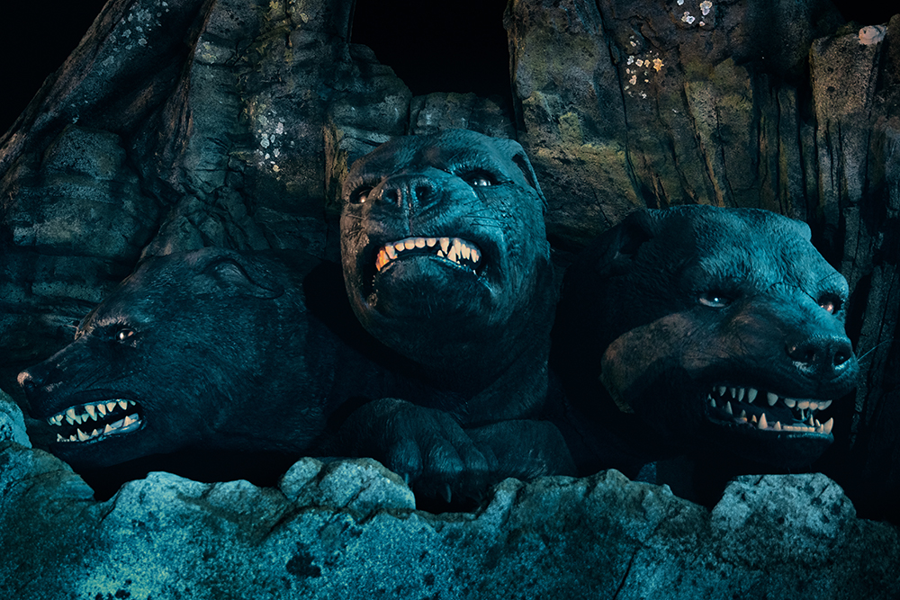
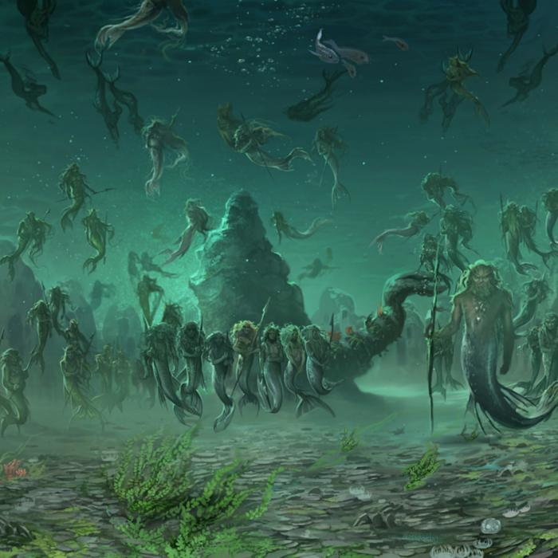

El universo Magico
Un mundo antiguo donde la magia, las casas legendarias y los secretos olvidados conviven más allá del tiempo.
Explora los secretos del mundo mágico
Adéntrate en un universo donde la magia fluye a través de cada rincón, revelando historias de hechizos antiguos, criaturas místicas y lugares legendarios.
Descubre tu personaje

Magia antigua
Conjuros olvidados y saberes prohibidos que dieron forma al mundo mágico.

Criaturas Místicas
Dragones, hipogrifos y seres que habitan más allá de la vista humana.

Lugares Legendarios
Castillos, bosques encantados y rincones donde la magia despierta.

Objetos poderosos que contienen la esencia de la magia antigua.